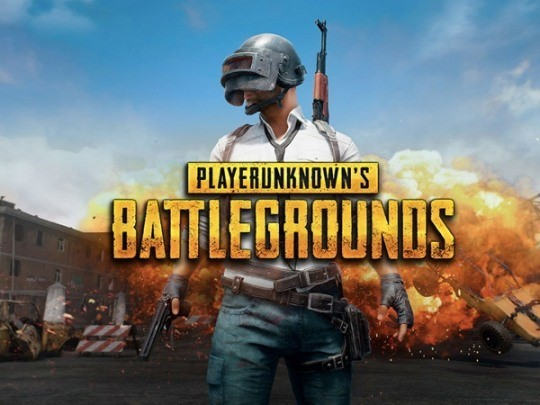

Battle ground
About Battle ground
최대100명이 고립된 지역에서 탑승물, 무기 등을 활용해 최후의 1인(또는 1팀)이 되기 위해 싸우는 비디오 게임으로, 블루홀이 개발했다.
정식 명칭은 ‘플레이어언노운즈 배틀그라운드(PUBG: PlayerUnknown’s Battlegrounds)’이고 흔히 배틀그라운드라고 부른다.
[네이버 지식백과] 배틀그라운드 (시사상식사전, pmg 지식엔진연구소)
About Battle ground
최대100명이 고립된 지역에서 탑승물, 무기 등을 활용해 최후의 1인(또는 1팀)이 되기 위해 싸우는 비디오 게임으로, 블루홀이 개발했다.
정식 명칭은 ‘플레이어언노운즈 배틀그라운드(PUBG: PlayerUnknown’s Battlegrounds)’이고 흔히 배틀그라운드라고 부른다.
[네이버 지식백과] 배틀그라운드 (시사상식사전, pmg 지식엔진연구소)